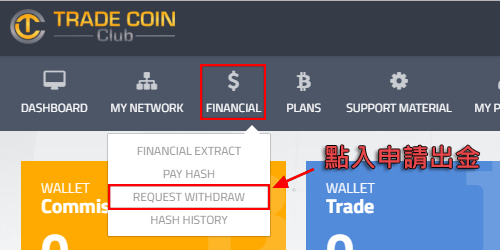
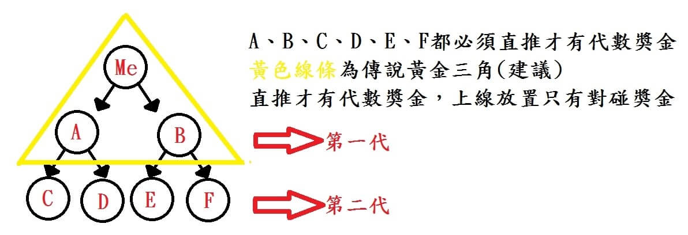

小提醒:因會員量暴增~假日有時會較卡外~平日偶而會塞爆~如登不了晚點再試
大家都知道比特幣流通量越來越少, 需求量又越來越大! 很多人已在大量的買幣存幣, 比特幣還是會有升值空間!
錯過了低價買比特幣時機, 現在你也想在短時間可不用花很多時間, 且能花少錢就可以累積並增值自己的比特幣嗎?
Trade Coin Club(TCC)可以當作他在投資"外匯保證金"方向去理解,
而TCC專業團隊所研發的軟體, 能幫我們自動交易買賣加密貨幣幫客戶去盈利!
我們只需要每星期一登入系統很簡單設定一次, 就可讓系統自動運作操作交易!
我們是一邊賺匯差, 一邊賺BTC, 兩頭賺!
而且在TCC能幫我們的比特幣增值及產生獲利! 這就是趨勢, 我們站在浪頭上!!
TCC最低投資額0.25BTC 0.01BTC, 公司降低門檻(0.01較適合做市場的夥伴,靜態會不划算)
如只靜態的夥伴建議0.1BTC以上開始比較好, 現在讓TCC自動交易系統幫我們增值比特幣吧^^
★【網站名稱】: Trade Coin Club(TCC)
★【最低投資金額】: 0.01BTC
★【最低提款金額】: 0.03BTC
★【如何收款】: 比特幣錢包
★【註冊步驟】: 簡易註冊及其他操作流程
◎重要!! 同一個人不能用不同証件註冊多帳號, 會被封鎖 已有案例◎
※確定要加入前, 建議先準備好如下再註冊, 到時候註冊.入金一次到位※
1.BTC交易平台(台灣:幣託或Maicoin, 香港:Anxpro或Localbitcoins等, 中國:幣多寶 或常用的平台)
2.準備好要入金的BTC(及早買及早賺)
3.護照&身分證(一個人一個帳號一套資料)
(以下所有的圖片, 如看不清按圖放大)
註冊流程
1. 點入網址註冊：http://goo.gl/ySnma2
2. 進入註冊頁面後, 依照下圖填寫個人真實資料!
注1. 所有資料需填寫真實資料, 填寫虛假資料會影響帳號問題及導致往後無法出金!!
特別是英文姓名需跟你的証件(護照/身分證)姓名一樣, 沒護照將中文姓名翻譯為英文!!
姓名中翻英：https://c2e.ezbox.idv.tw/name.php
注2. 郵箱請使用Gmail, 不要用Yahoo郵箱, 因為Yahoo會擋信及會收不到系統驗證郵件喔!!

3. 註冊成功後, 請到郵箱收信, 會有封確認郵件, 然後拉到底點入連結驗證你的註冊, 這樣才算註冊成功
入金流程
登入後台後, 需要先入金才可以操作後台的功能 (如只註冊並沒入金, 無法操作後台)
1. 輸入你要投資的比特幣金額, 需外加0.05手續費(軟體使用費,首次支付), 之後點Generate Hash
(比如你想要入金投資0.25BTC, 即0.25+0.05=0.3BTC)
2. 確認下入金的金額, 點Confirm Payment後再去支付
3. 複製付款的地址, 再到你使用的BTC平台去支付
注.紅色的Cancel Payment按鈕不能點, 那是取消付款, 不要亂點紅色按鈕喔
4. 以下付款是用台灣的BitoEX做示範, 如用其他的平台操作都是差不多
5. 支付完成後, 一般等約15-60分鐘左右(如遇網路擠擁會久一點,最久等過快一天), 到時候回到TCC後台刷新頁面一下
當你成功入金後, 就會看到你後台的介面! (按圖可放大)
操作齒輪啟動自動交易獲利
TCC自動交易系統, 只需每周一操作一次
入金後的夥伴於倫敦每週一0點到24點可啟動交易!
(台灣時間每星期一8:00後(建議9:00後)到19:00之前啟動全自動交易並點選風險值)
注!! 如啟動全自動交易的要在周一設定好, 因其他的時間無法做設定及啟動全自動
1.登入TCC後台 https://office.tradecoinclub.com/login
2.點齒輪圖(電腦版點右邊的小齒輪)
（1）選交易模式(mode)：
全自動（Automatic)：TCC自動幫你做交易和風險控管，不懂貨幣走向的，請選全自動
半自動（Semi automatic)：自選一種比特幣以外的幣種進行交易(能每天早上到晚上7點前換幣別)，風險自己承擔可能高獲利也可能是0獲利！
（2）點選風險值：低(low)、中(medium)、高(high)（全自動選風險值,衡量自己風險承受度來選）
3.全自動風險值或半自動選好了，要重新整理刷新頁面或是登出再登進，全自動模式出現Operating value及有轉動，才有算成功
（基本上出現數字以及齒輪轉動就是OK了! 不過曾發生過啟動後, 後來又停下來的情況, 請大家19:00前記得習慣登入看看齒輪是否正常, 隔天發現有異狀要立即請客服處理）
PS. 趕不及或是忘記在周一啟動全自動交易的, 可先在當周啟動半自動, 半自動只是改成讓你可以變成單一幣別讓系統自動交易
除非你對單一貨幣別的趨勢走向及敏感度很高~才建議用半自動, 不然就是選全自動, 由系統自動做交易就好了
帳號激活
出金一定要已激活帳號, 這部分需不急不影響收益, 但請盡快完成
指向頭像旁邊名字或功能表的My Profile
1.Enter a Address
找到Address, 點入 Add Address 輸入住址
郵政地址翻譯: http://www.post.gov.tw/post/internet/SearchZone/index.jsp?ID=130112
2. Send a Document
上傅手拿著護照的照片, 清晰看到你的臉, 証件清楚可見, 你的臉跟証件要入鏡
準備好後, 點Add Documents把文件上傅, 一般48小時內(最長可能一周)審核, 遇六,日會延後
下面有拍証件示範圖
3. Enter your BTC wallet
在TCC後台添加你出金的比特幣錢包地址
到你使用的BTC平台 複製錢包地址
複製後, 添加到TCC後台
成功激活帳號~如下圖
複投流程
複投金額達最少0.003BTC就可複投(獎金,交易盈利的錢)
可一開始你的利潤+獎金(如做動態)夠0.003都可進行複投, 讓收益最大化及加速!
任何投資都會有風險
心臟比較大顆的，可以把得到的利潤達0.003再複投進本金做複利滾存。
心臟比較小顆的，可在每次利潤或獎金達0.03時領出，以回本為首要目的。
.
1. 到頭像右下角, 找到Change Countersign並點入
2. 你可以直接用系統給你產生的Countersign, 之後就可以不用更改Countersign
建議直接用系統給的, 以後複投、出金时就用這個Countersign (自己記錄下來)
點Click here之後到Mail收信 系統就會給你Countersign
Countersign設一次就好, 不用每次設定
3. 開始複投操作
到Plans > Buy 輸入要複投金額-最少0.003BTC
記錄好自己Commission&Trade加起來複投的總金額(如得到的獎金都要複投)
4. 輸入Commission&Trade加起來後複投的總金額, 之後點Generate HASH

5. 複投只需複製HASH碼就可以 (不用點Confirm Payment)
6. 到Financial > Pay HASH
7. 貼上剛才複製的HASH

8. 輸入轉出的總額(僅使用Commission&Trade錢包)
9. 然後點Pay
輸入Xpass(即剛剛已設定的二級密碼) ，在點Token認證
如此即完成複投流程!
提款流程
提款必要條件！
完成帳號激活&總金額達0.03BTC(需8%手續費)
出金前, 請你先檢查自己後台的My Wallets, 是否已經設定好出金到你的比特幣錢包地址
1.申請出金到 Financial > Request Withdraw

2.輸入出金錢包(僅用Commission&Trade錢包, 千萬"不要"出金Exchange黑錢包!!)
3.輸入xPass, 然後點Token認證, 之後點Request
(xPass跟Token請手動輸入, 不要用複製貼上)
4.約24小時內出金到你設定的BTC錢包地址

TCC獎勵方案
黃金三角組織
TCC對碰、代數等獎金都必須先完成兩位直推,左右各一個(如下圖)
注. 每個人一套資料只可擁有一個帳號, 請不要一套資料開多個帳號, 公司是不允許! 如真要操作多帳號請用家人資料!

如何擺放組織？請依照以下步驟。
開啟組織後台, 到 My Network > Binary Network

Pattern Team 左右側選定
發送註冊連結 (手機版會直接開啟網頁，再到上面複製)

註冊頁面(Sponsor確認是否為你本人ID)
夥伴註冊完畢後，請到自己的email找信件(如圖)
上圖信件表示註冊成功，但還尚未成為正式會員！
當夥伴入金後，最快知道的方式是看自己的錢包或是收信
收益
TCC比特幣自動交易,一天盈利分紅0.5%-1%
目前我都是把利潤複投為主, 複利滾存
收款
(圖片如看不清,可按圖放大)
我的收款
夥伴的收款
提款有8%手續費的
如你在註冊/操作遇上問題, 請在mail與我聯絡:getmecoinnow@gmail.com
如你已有推薦人, 請直接找你的推薦人協助你